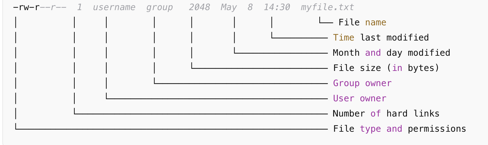

4 Making and managing folder
Now that you can move around the Terminal like a pro, it’s time to create your own stuff.
In this chapter, we’ll learn to make new folders and files. We’ll also learn how to move or delete them.
4.1 Creating a Folder (mkdir)
mkdirstands for make directory.
Let’s say you wanted to make a brand new folder on your computer. If you were doing this in Finder, you’d do something like right click inside your folder, and click on New Folder in the menu. Then you’d need to fill out your folder name and save the folder.
To do this from the command line, however, we do all of these steps in a single prompt using the mkdir command.
For example, if you ran the following command from inside your home directory (~) (don’t do this):
mkdir my_new_folderThis would create a new folder called my_new_folder inside your directory. We’ll practice doing this in the next step.
4.2 📝 Mini excercise: make a directory
Now, let’s try the mkdir command out on our own by making a new directory inside our own home directory (~).
Do the following:
Check you’re in your home directory by running the
cdcommand. (If you aren’t, use thecdshortcut to get there.)Now, in your terminal, type and run:
mkdir terminal_practiceNow, run the
lscommand to make sure it worked. You should see your new directory listed in the terminal response.
4.3 Creating a new file (touch)
Unlike other commands we’ve learned,
touchisn’t shorthand for anything. It’s just the name of the command to make a new, empty file in Bash 🤷♀️
Like folders, we can also make new files from the command line using the touch command.
For example, if you ran the following command (don’t do this):
touch example.txtThis creates a new, empty file called example.txt.
4.4 📝 Mini excercise: make a file
Now, try let’s try the touch command on our own by making a new file inside our new terminal_practice folder we created in the last exercise.
Do the following:
First, move into your new folder by running the command:
cd terminal_practiceNow, make a new notes file inside the folder by running:
touch notes.txtCheck that your new file is there by running
lscommand to list the files in your folder.
You should see a single file listed in the terminal response called notes.txt.
Good job! You just made your first file and folder completely using the command line.
4.5 Copying files and folders (cp)
cpis shorthand for “copy”
We can also make duplicate files or folders from command line using the cp command.
Unlike the other commands we’ve learned so far, the cp commands takes two arguments instead of just one. “Arguments” are just the pieces of information you feed the command line to tell it what to do. For example, in the cd Documents command, “Documents” was the argument telling the command line to go inside the Documents folder.
Syntax of the cp command
cp source_file_folder destination_file_folder
The cp command takes at least two arguments:
- Source file or folder: the file or folder you want to copy.
- Destination file or folder: the name you’d like the copy of the file or folder to be called.
4.6 📝 Mini excercise: copy a file
Now, try let’s try out the cp command on our own by making a copy of notes file you made inside your terminal_practice in the last exercise.
Do the following to copy your notes file:
Run the following from inside your
terminal_practicefolder:cp notes.txt copy_of_notes.txtRun the
lscommand to see the files inside your folder.
You should now you have two files: the original (notes.txt) and the new copy (copy_of_notes.txt).
As we said before, the cp command can also copy whole directories. However, it’s a little more nuanced. If you’d like to learn more about copying folders, please see appendix [TK]
4.7 Moving or Renaming Files (mv)
mvis shorthand for “move”
Moving files or folders from command line is also easy using the mv command. The command can also by used to rename files, depending on the syntax you use.
Syntax of the mv command
To move a file’s location, use the following syntax:
mv source_file destination_folder
If you just want to rename a file, use the following syntax:
mv oldname.txt newname.txt
We’ll practice the two different ways to use the mv command in the next exercise.
4.8 📝 Mini exercise: move and rename a file
In this exercise we’ll practice both renaming and moving files using the copy of your notes file you made in the previous exercise.
Exercise part 1: move your notes copy file
First, make a new directory by running the following command from inside your
terminal_practicedirectory:mkdir my_new_folderNow, peek at your files and folders by running the
lsinside yourterminal_practicefolder. Make sure the new folder is there.Next, we’ll move the copy of your notes files into your new sub-folder by running:
mv copy_of_notes.txt my_new_folder/Now, run the
lscommand again to look at the files inside yourterminal_practicefolder. You should still see a new folder calledmy_new_folder, but you should not see the copy of your notes file.
Next, we’ll locate the copy of our notes file:
Run the following command to move into your new folder:
cd my_new_folderNow run
lsto peek at the files. You should see your copy of the notes file listed.
Exercise part 2: rename a file
Ok now that we’ve moved and located our copy of our notes file, let’s rename it something nicer.
From inside your new folder, run the following command to rename your notes copy:
mv copy_of_notes.txt notes_new.txtRun the
lsto look at your files. You should see the copy of your notes files, but now with a new, cleaner name.
Great job! You’re now well on your way to managing files and folders directly from the command line.
4.9 Deleting files and folders (rm)
rmis shorthand for “remove”
You can also use the command line to delete files and folders on your machine using the rm command.
This command does require some caution because when you delete something from the terminal, it doesn’t go to the Trash — it’s just gone.
Be very careful when using the rm command. Any files you delete this way do not go to Trash, and will be unrecoverable. Make sure that you really want to delete your files or folder before proceeding. Additionally, deleting a folder deletes everything inside of that folder as well.
Syntax of the rm command:
Deleting a single file:
rm name_file_to_delete
Deleting a folder (and everything inside it):
rm -r folder_to_delete
What does that -r mean?
- The
-rhere is called a flag. The one here stands for “recursive” — it tellsrmcommand to delete not just the folder, but also everything that’s inside it. We’ll talk a little more about flags in the next section.
4.10 Quick Note About Flags 🏳️
Flags are just another type of argument you can add to commands to change how they behave.
- They’re usually a dash plus one or two letters. (Example:
-rmeans “recursive” for thermcommand) - Each command has its own set of flags that it understands. A flag that works with one command won’t necessarily work with another.
- You can combine flags (like
rm -rfwhich combines the-rflag for “recursive” and-fflag for “force delete”).
You’ll see flags often out in the wild. As you use the command line more, you’ll start to use more of these flags in your workflow to give you more control over what your commands do. For now, just know when you see something starting with a dash in the command line, it’s probably a flag giving the command a little extra information about what to do.
Optional mini exercise:
If you want, you can try one out yourself now by using the -l flag along with the ls command.The flag tells the command line, “give me more information about each file in my directory”.
Run the following command to see this flag in action:
ls -l Terminal will respond with detailed information about each file and folder in your directory. See the screenshot below for more information about each detail field.

-l flag Terminal response4.11 🎯 Checkpoint
Phew. In this chapter you’ve learned a lot:
- How to create a new folder/directory (
mkdir). - How to create a new file (
touch file_name). - How to copy files (
cp ..). - How to move and rename files (
mv..). - How flags (e.g.
-r,-l) can be used to power-up commands.
You also may be catching onto the fact that we use some commands repeatedly in the command line to help us not get lost in our own workflow. The ls command, for example, is super useful for confirming actions on files and folders worked, and pwd is like a compass to figure out where you are.
Next up:
We’ll learn some key tips and tricks to make your command line workflow more efficient.